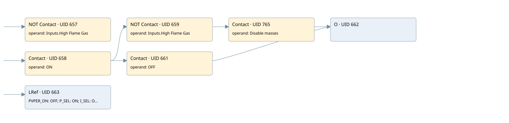

run pid block
control_stechio · 검색 색인 순서 3 · 원본 내부 NID 추정 3
백업 PLF 원본의 2717027 바이트 위치에서 복원한 XML. 검색 문서 1832의 객체 키 161022000b11000000000000와 연결했다. 이름 해석 26/38개. 남은 RefId는 상수 또는 미해석 참조다.
연결 구조 다시 그리기
원본 Part/PCon/Wire를 이용한 연결도다. TIA 화면의 래더 배치 또는 실행 결과를 재현한 그림은 아니다. 핀 연결은 아래 표와 원본 XML을 기준으로 읽는다. 노드 위에 마우스를 두면 피연산자 이름을 볼 수 있다.

접점·코일·블록과 피연산자
| Part UID | Gate | Negated 핀 | 연결 피연산자 |
|---|---|---|---|
| 657 | Contact | operand | operand = Inputs.High Flame Gas |
| 658 | Contact | operand = ON | |
| 659 | Contact | operand | operand = Inputs.High Flame Gas |
| 765 | Contact | operand = Disable masses | |
| 661 | Contact | operand = OFF | |
| 662 | O | ||
| 663 | LRef | 호출 참조: RefId 112; PVPER_ON = OFF; P_SEL = ON; I_SEL = ON; INT_HOLD = RefId (RefId 없음) / ORef UID 680; I_ITL_ON = RefId (RefId 없음) / ORef UID 681; D_SEL = ON; CYCLE = T#100MS; SP_INT = SetPoint_Stechio; PV_IN = Stechio_attuale; PV_PER = RefId (RefId 없음) / ORef UID 686; MAN = 0.0; GAIN = Stechio.PID_GAIN; TI = Stechio.PID_TI; TD = Stechio.PID_TD; TM_LAG = T#1M; DEADB_W = 0.1; LMN_HLM = Stechio.Limite_MAX; LMN_LLM = Stechio.Limite_min; PV_FAC = 1.0; PV_OFF = 0.0; LMN_FAC = 1.0; LMN_OFF = 0.0; I_ITLVAL = RefId (RefId 없음) / ORef UID 699; DISV = 1.0; LMN = Correzione_Stechio; LMN_PER = RefId (RefId 없음) / ORef UID 702; QLMN_HLM = RefId (RefId 없음) / ORef UID 703; QLMN_LLM = RefId (RefId 없음) / ORef UID 704; LMN_P = RefId (RefId 없음) / ORef UID 705; LMN_I = RefId (RefId 없음) / ORef UID 706; LMN_D = RefId (RefId 없음) / ORef UID 707; PV = RefId (RefId 없음) / ORef UID 708; ER = RefId (RefId 없음) / ORef UID 709 |
접점 경로를 펼친 조건식
Contact·O/A·비교기의 원본 연결을 읽기 쉽게 펼친 보조 해석이다. POWER는 전원 레일 시작을 뜻한다. 호출 블록·에지·타이머의 내부 동작과 다중 쓰기 순서는 이 표로 실행 검증하지 않았다. 미해석 핀과 RefId는 원문 연결표에서 확인한다.
| UID | 동작 | 대상 | 원본 접점 경로 | 내용 |
|---|
원본 배선 연결
| Wire UID | 동일 Wire 연결 끝점 |
|---|---|
| 637 | Powerrail {} ↔ Part 663.en ↔ Part 657.in ↔ Part 658.in |
| 721 | ORef 672 (Inputs.High Flame Gas) ↔ Part 657.operand |
| 722 | Part 657.out ↔ Part 663.COM_RST |
| 723 | ORef 673 (ON) ↔ Part 658.operand |
| 724 | Part 658.out ↔ Part 659.in ↔ Part 661.in |
| 725 | ORef 674 (Inputs.High Flame Gas) ↔ Part 659.operand |
| 726 | Part 659.out ↔ Part 765.in |
| 768 | ORef 766 (Disable masses) ↔ Part 765.operand |
| 21 | Part 765.out ↔ Part 662.in1 |
| 729 | ORef 676 (OFF) ↔ Part 661.operand |
| 730 | Part 661.out ↔ Part 662.in2 |
| 731 | Part 662.out ↔ Part 663.MAN_ON |
| 732 | ORef 677 (OFF) ↔ Part 663.PVPER_ON |
| 733 | ORef 678 (ON) ↔ Part 663.P_SEL |
| 734 | ORef 679 (ON) ↔ Part 663.I_SEL |
| 735 | ORef 680 (RefId (RefId 없음)) ↔ Part 663.INT_HOLD |
| 736 | ORef 681 (RefId (RefId 없음)) ↔ Part 663.I_ITL_ON |
| 737 | ORef 682 (ON) ↔ Part 663.D_SEL |
| 738 | ORef 683 (T#100MS) ↔ Part 663.CYCLE |
| 739 | ORef 684 (SetPoint_Stechio) ↔ Part 663.SP_INT |
| 740 | ORef 685 (Stechio_attuale) ↔ Part 663.PV_IN |
| 741 | ORef 686 (RefId (RefId 없음)) ↔ Part 663.PV_PER |
| 742 | ORef 687 (0.0) ↔ Part 663.MAN |
| 743 | ORef 688 (Stechio.PID_GAIN) ↔ Part 663.GAIN |
| 744 | ORef 689 (Stechio.PID_TI) ↔ Part 663.TI |
| 745 | ORef 690 (Stechio.PID_TD) ↔ Part 663.TD |
| 746 | ORef 691 (T#1M) ↔ Part 663.TM_LAG |
| 747 | ORef 692 (0.1) ↔ Part 663.DEADB_W |
| 748 | ORef 693 (Stechio.Limite_MAX) ↔ Part 663.LMN_HLM |
| 749 | ORef 694 (Stechio.Limite_min) ↔ Part 663.LMN_LLM |
| 750 | ORef 695 (1.0) ↔ Part 663.PV_FAC |
| 751 | ORef 696 (0.0) ↔ Part 663.PV_OFF |
| 752 | ORef 697 (1.0) ↔ Part 663.LMN_FAC |
| 753 | ORef 698 (0.0) ↔ Part 663.LMN_OFF |
| 754 | ORef 699 (RefId (RefId 없음)) ↔ Part 663.I_ITLVAL |
| 755 | ORef 700 (1.0) ↔ Part 663.DISV |
| 756 | Part 663.LMN ↔ ORef 701 (Correzione_Stechio) |
| 757 | Part 663.LMN_PER ↔ ORef 702 (RefId (RefId 없음)) |
| 758 | Part 663.QLMN_HLM ↔ ORef 703 (RefId (RefId 없음)) |
| 759 | Part 663.QLMN_LLM ↔ ORef 704 (RefId (RefId 없음)) |
| 760 | Part 663.LMN_P ↔ ORef 705 (RefId (RefId 없음)) |
| 761 | Part 663.LMN_I ↔ ORef 706 (RefId (RefId 없음)) |
| 762 | Part 663.LMN_D ↔ ORef 707 (RefId (RefId 없음)) |
| 763 | Part 663.PV ↔ ORef 708 (RefId (RefId 없음)) |
| 764 | Part 663.ER ↔ ORef 709 (RefId (RefId 없음)) |
식별자 해석 근거 38개
| ORef UID | RefId | 이름 | IdentXmlPart 파일 | 해석 방법 |
|---|---|---|---|---|
| 672 | 124 | Inputs.High Flame Gas | 0591-IdentXmlPart.xml | UID/RID + search-text + NID agreement |
| 673 | 1 | ON | 0588-IdentXmlPart.xml | UID/RID + search-text + NID agreement |
| 674 | 124 | Inputs.High Flame Gas | 0591-IdentXmlPart.xml | UID/RID + search-text + NID agreement |
| 766 | 77 | Disable masses | 0588-IdentXmlPart.xml | UID/RID + search-text + NID agreement |
| 676 | 78 | OFF | 0588-IdentXmlPart.xml | UID/RID + search-text + NID agreement |
| 677 | 78 | OFF | 0588-IdentXmlPart.xml | UID/RID + search-text + NID agreement |
| 678 | 1 | ON | 0588-IdentXmlPart.xml | UID/RID + search-text + NID agreement |
| 679 | 1 | ON | 0588-IdentXmlPart.xml | UID/RID + search-text + NID agreement |
| 680 | (RefId 없음) | 미해석 RefId | 식별 선언 원본 참조 | 미해석 |
| 681 | (RefId 없음) | 미해석 RefId | 식별 선언 원본 참조 | 미해석 |
| 682 | 1 | ON | 0588-IdentXmlPart.xml | UID/RID + search-text + NID agreement |
| 683 | 87 | T#100MS | 0592-IdentXmlPart.xml | literal candidate: UID/RID/NID + nearby named declarations + search-text agreement |
| 684 | 74 | SetPoint_Stechio | 0589-IdentXmlPart.xml | UID/RID + search-text + NID agreement |
| 685 | 71 | Stechio_attuale | 0589-IdentXmlPart.xml | UID/RID + search-text + NID agreement |
| 686 | (RefId 없음) | 미해석 RefId | 식별 선언 원본 참조 | 미해석 |
| 687 | 88 | 0.0 | 0592-IdentXmlPart.xml | literal candidate: UID/RID/NID + nearby named declarations + search-text agreement |
| 688 | 89 | Stechio.PID_GAIN | 0591-IdentXmlPart.xml | UID/RID + search-text + NID agreement |
| 689 | 90 | Stechio.PID_TI | 0591-IdentXmlPart.xml | UID/RID + search-text + NID agreement |
| 690 | 91 | Stechio.PID_TD | 0591-IdentXmlPart.xml | UID/RID + search-text + NID agreement |
| 691 | 92 | T#1M | 0592-IdentXmlPart.xml | literal candidate: UID/RID/NID + nearby named declarations + search-text agreement |
| 692 | 93 | 0.1 | 0592-IdentXmlPart.xml | literal candidate: UID/RID/NID + nearby named declarations + search-text agreement |
| 693 | 94 | Stechio.Limite_MAX | 0591-IdentXmlPart.xml | UID/RID + search-text + NID agreement |
| 694 | 95 | Stechio.Limite_min | 0591-IdentXmlPart.xml | UID/RID + search-text + NID agreement |
| 695 | 96 | 1.0 | 0592-IdentXmlPart.xml | literal candidate: UID/RID/NID + nearby named declarations + search-text agreement |
| 696 | 88 | 0.0 | 0592-IdentXmlPart.xml | literal candidate: UID/RID/NID + nearby named declarations + search-text agreement |
| 697 | 96 | 1.0 | 0592-IdentXmlPart.xml | literal candidate: UID/RID/NID + nearby named declarations + search-text agreement |
| 698 | 88 | 0.0 | 0592-IdentXmlPart.xml | literal candidate: UID/RID/NID + nearby named declarations + search-text agreement |
| 699 | (RefId 없음) | 미해석 RefId | 식별 선언 원본 참조 | 미해석 |
| 700 | 96 | 1.0 | 0592-IdentXmlPart.xml | literal candidate: UID/RID/NID + nearby named declarations + search-text agreement |
| 701 | 97 | Correzione_Stechio | 0589-IdentXmlPart.xml | UID/RID + search-text + NID agreement |
| 702 | (RefId 없음) | 미해석 RefId | 식별 선언 원본 참조 | 미해석 |
| 703 | (RefId 없음) | 미해석 RefId | 식별 선언 원본 참조 | 미해석 |
| 704 | (RefId 없음) | 미해석 RefId | 식별 선언 원본 참조 | 미해석 |
| 705 | (RefId 없음) | 미해석 RefId | 식별 선언 원본 참조 | 미해석 |
| 706 | (RefId 없음) | 미해석 RefId | 식별 선언 원본 참조 | 미해석 |
| 707 | (RefId 없음) | 미해석 RefId | 식별 선언 원본 참조 | 미해석 |
| 708 | (RefId 없음) | 미해석 RefId | 식별 선언 원본 참조 | 미해석 |
| 709 | (RefId 없음) | 미해석 RefId | 식별 선언 원본 참조 | 미해석 |
검색 코드 보조 자료
참조 명칭을 찾기 위한 자료이며 실행 순서나 AND/OR 관계는 위 연결표로 확인한다.
cont_c "pid_stechio" "off" "on" "on" "on" t#100ms #setpoint_stechio #stechio_attuale 0.0 "stechio".pid_gain "stechio".pid_ti "stechio".pid_td t#1m 0.1 "stechio".limite_max "stechio".limite_min 1.0 0.0 1.0 0.0 1.0 "inputs"."high flame gas" "on" "inputs"."high flame gas" "disable masses" "off" #correzione_stechio